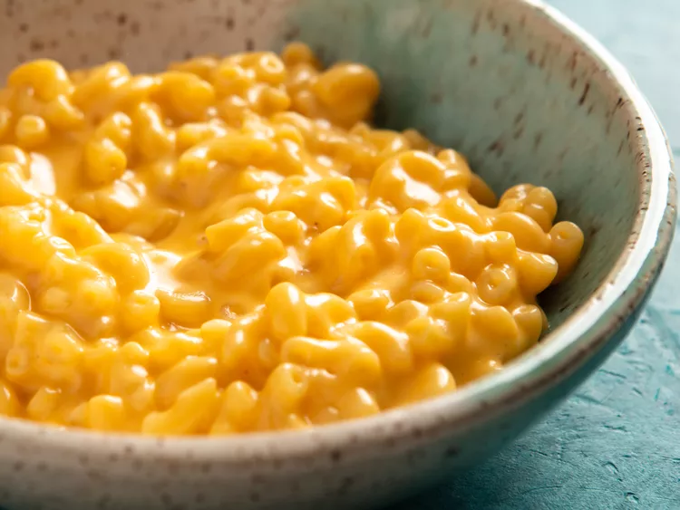

Mac and Cheese

Ingredients
- 2.5 ounces (½ cup) uncooked macaroni
- 1 tablespoon salted butter
- 1 tablespoon all-purpose flour
- ½ cup milk any percentage
- ½ cup (2oz) shredded sharp cheddar cheese
- Salt and pepper
Instructions
- Bring a small pot of lightly salted water to boil over high heat.
- While your water heats, shred cheese, measure out the rest of your ingredients.
- Cook macaroni according to the instructions on the box.
- While your pasta cooks, in a small saucepan, melt butter over medium heat. Whisk in flour and cook until a thick paste forms and turns golden, about 30 seconds to 1 minute. Slowly whisk in milk, whisking out any lumps as they form. Cook, whisking constantly until mixture thickens and begins to bubble around the edges, 2 to 5 minutes.
- Remove from heat and stir in cheese until completely melted. Add salt and pepper to taste, remembering that the pasta will cut the level of spice once added. If you like nutmeg and cayenne (I do!), start with a sprinkle, taste, and work your way up. A little of both goes a long way!
- Once pasta is cooked, drain and stir in cheese sauce. Serve immediately and enjoy!
Home